, with
, with  ), so the SNR
), so the SNR  has an optimum gain; low
has an optimum gain; low Multiplication
An electron accelerated in a field
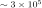
V/cm gains more than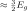
between collisions and creates a new electron–hole pair. Ionisation coefficients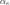
,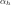
(per unit length) grow steeply with field. If only electrons ionise (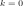
),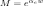
grows smoothly and there is no feedback; if holes also ionise, holes travelling back trigger new electrons: positive feedback, larger fluctuations, slower avalanche build-up and breakdown when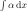
reaches 1 (McIntyre 1966). Empirically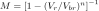
,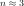
–6;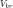
rises with temperature (phonons steal energy), so APDs need bias or temperature control.Structures
- Reach-through Si APD (n⁺-p-π-p⁺): light absorbed in the wide π region, electrons drift to a thin high-field p–n⁺ layer where they multiply; electrons only,
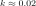
. - SAM InGaAs/InP: absorption in narrow-gap InGaAs (1.3–1.6 µm) at low field (no tunnelling dark current), multiplication in wide-gap InP at high field; an InGaAsP grading layer smooths the band offset (SAGM). Holes multiply,
 –0.5 → noisier.
–0.5 → noisier. - Superlattice and InAlAs multipliers lower
 ; Ge-on-Si APDs use Si for multiplication.
; Ge-on-Si APDs use Si for multiplication. - SPAD: biased above breakdown (Geiger mode), each photon triggers a macroscopic pulse, then quenched: single-photon counting (LiDAR, quantum optics).
Picture: SNR versus gain (InGaAs APD, 100 nW, 1 GHz, 1 kΩ)
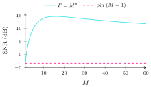
 (100 nW, 1 GHz, 1 kΩ, excess noise
(100 nW, 1 GHz, 1 kΩ, excess noise 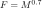
), against a pin photodiode (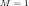
): gain helps until excess noise takes over, so there is an optimum.Optimum gain (derivation)
At low thermal noise dominates and the SNR grows as
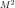
; at high the multiplied shot noise grows as 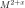
(with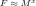
,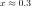
Si, 0.7 InGaAs) and the SNR falls as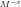
. Setting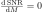
: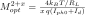
. APDs therefore help only when thermal noise dominates, and the gain-bandwidth product (≈ 100–300 GHz) limits fast APDs to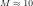
.Worked examples
- Gain:
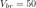
V,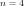
: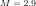
, 6.6, 12.9 at 45, 48, 49 V — the last volt matters most. - Responsivity: Si APD at 850 nm,
 ,
, 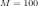
: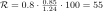
A/W. - Excess noise: Si (
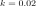
) at :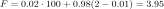
; InGaAs/InP (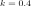
) at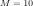
: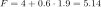
. - Receiver: 100 nW at 1550 nm,
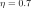
( A/W,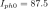
nA), GHz, 1 kΩ (thermal 0.129 µA rms): pin SNR
GHz, 1 kΩ (thermal 0.129 µA rms): pin SNR 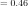
(−3.4 dB). APD with : 10.1 dB at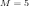
, 14.0 dB at , maximum 14.7 dB at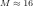
, 13.8 dB at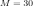
.
Engineering applications
Long-reach and 10G-PON receivers (≈ 8–10 dB more sensitivity than pin), LiDAR (linear APDs and SPAD arrays), laser rangefinders, PET scanners (SiPM: arrays of SPADs), photon counting for QKD and fluorescence lifetime.
Exam-style exercise
A Si APD at 800 nm has  at , dark current (primary, unmultiplied) 1 nA, , and is operated at
at , dark current (primary, unmultiplied) 1 nA, , and is operated at
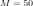
in a 100 MHz receiver with 50 kΩ load at 300 K, receiving 10 nW. (a) Multiplied photocurrent. (b) Excess noise factor. (c) Shot and thermal noise currents. (d) SNR, and SNR of the same diode at .Solution
(a)
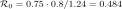
A/W,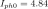
nA, nA. (b)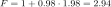
. (c) Shot: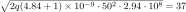
nA; thermal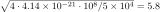
nA. (d)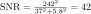
(16.2 dB). At : shot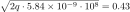
nA,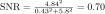
(−1.5 dB). The APD gains ≈ 18 dB, but is already past the optimum: at shot noise is 6× the thermal noise; the maximum is at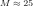
(16.7 dB), and gives 15.1 dB. Choose the gain where the multiplied shot noise is comparable to the thermal noise.Pitfall
Dark current has two parts: the bulk part flows through the multiplication region and is multiplied (with its excess noise), the surface leakage is not. Use the unmultiplied primary dark current inside .